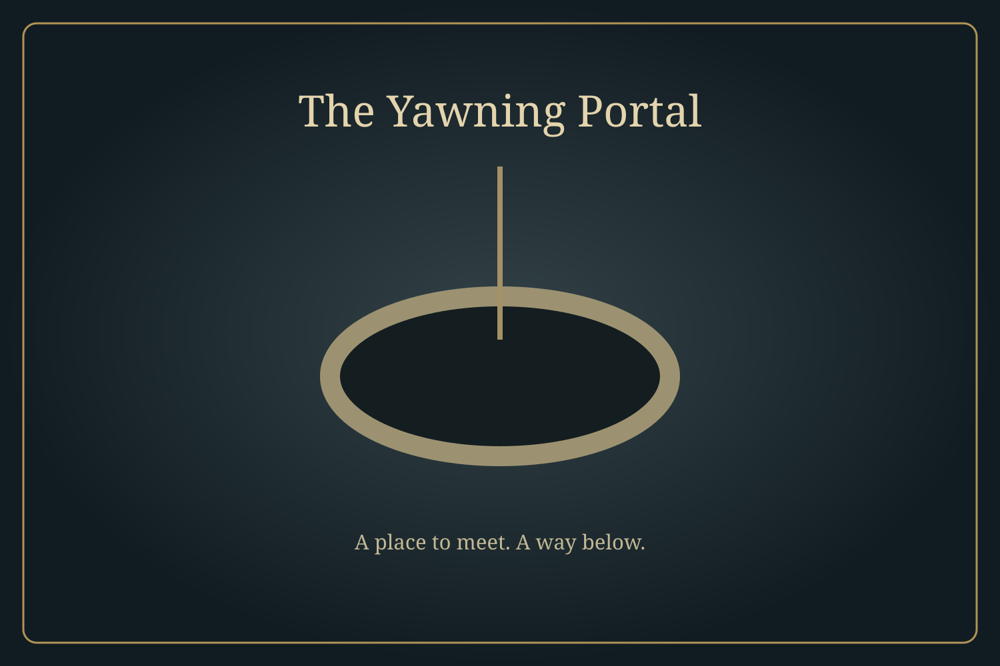

The Echo Below
Prep
Run
Review
Campaign · Session 4
Phone layout
Scene
Next turn
Player TV
Mute
Inbox
Undo
Now showing: Yawning Portal · TV connected
Session
Quests
Party
World
Library
Settings
Search
Current scene · The Yawning Portal

THE ECHO BELOW · CONNECTED
Pebble
43 / 43 HP · AC 18
Your turn
Choose an action, then select a target.
Open actions
Party objective: find Gundren's next lead.
Turn
Explore
Sheet
Journal
Items